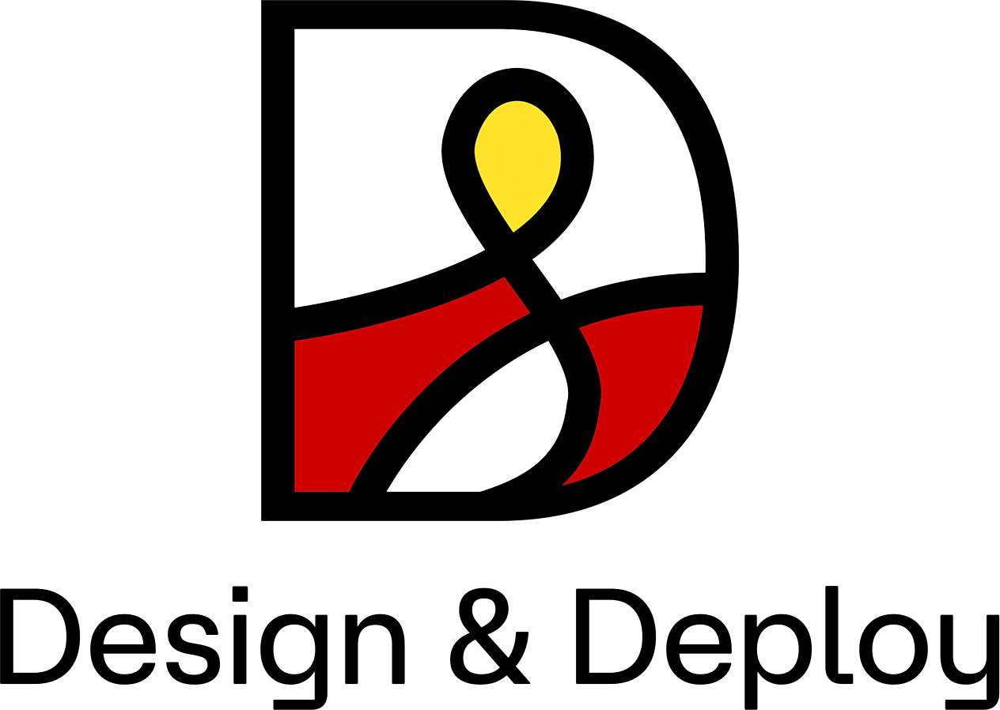
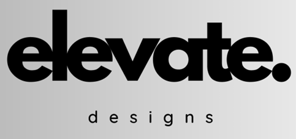
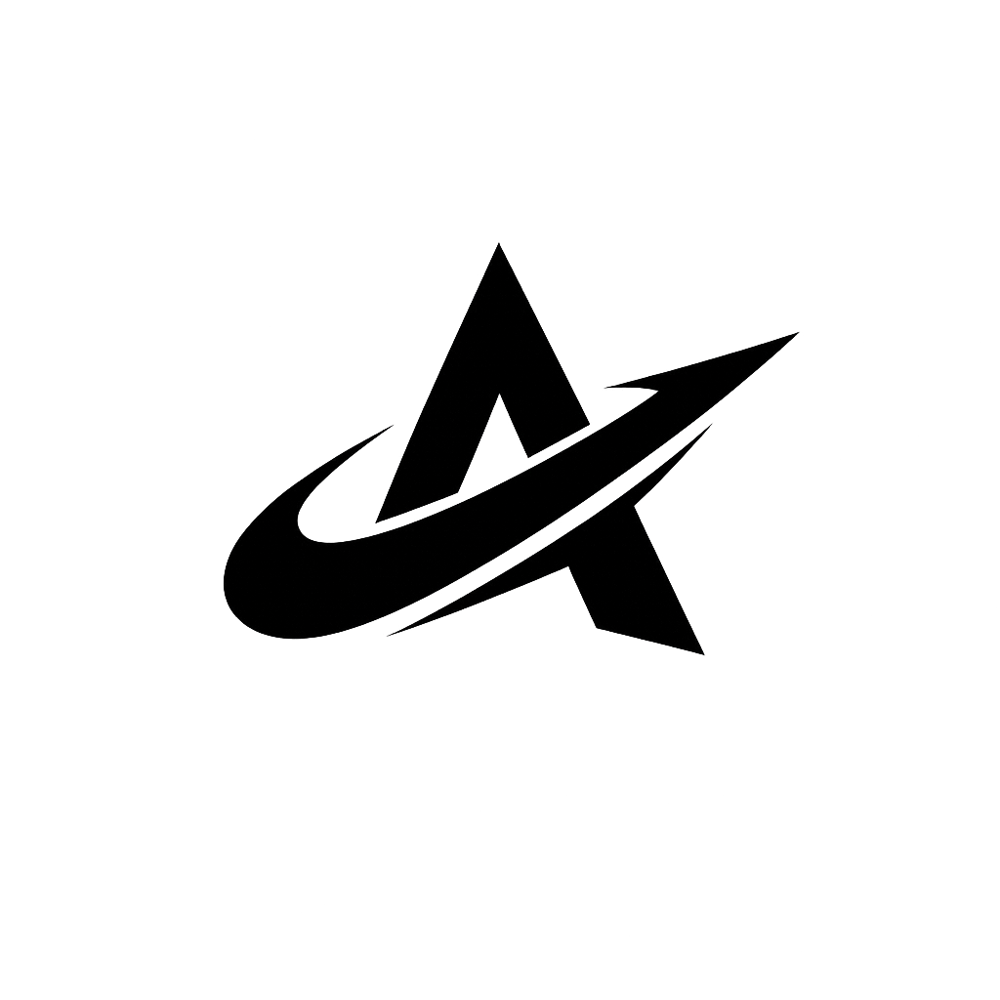
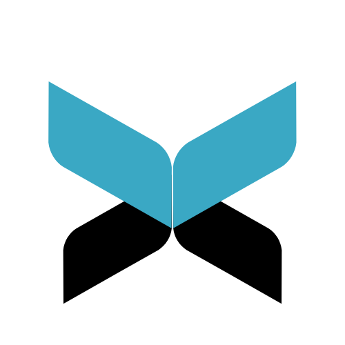

Creative Studio
Look at what we have been building
We believe design should not just exist — it should move, react, and provoke. Every interaction is intentional, every motion is meaningful.
It started with a need to build differently. Not faster. Not louder. But sharper, cleaner, and more human.


Tell us what you need.
We'll build it right.
From early-stage ideas to production-ready systems.




Real stories from founders and teams building with us.

"The design system they built for us became the foundation of our entire product. Ship velocity doubled within 6 weeks."

"We had three failed redesigns before them. Within 12 weeks we had a product that finally matched the ambition of our brand."

"They're the only studio I've worked with that treats design and engineering as the same problem. The output is immaculate."

"Our conversion rate jumped 40% in the first month. More importantly, we finally feel proud to show people our product."

"I've worked with 5 agencies in 3 years. None of them understood both brand and product depth the way this studio does."

"They shipped our entire design system, component library, and production frontend in 8 weeks flat. Genuinely remarkable."